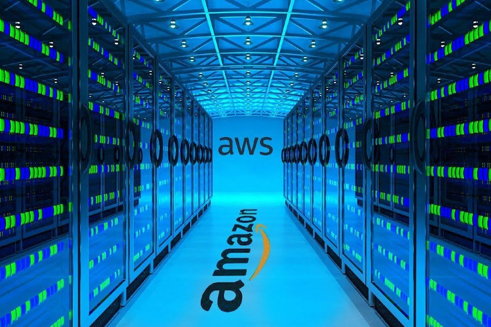

A ideia do que seria a nuvem nasceu em 1960, motivada pela crescente necessidade de compartilhar um mesmo computador para várias tarefas simultâneas. Naquela época, o poder de processamento era raro e caro, e o conceito de "tempo compartilhado" foi o primeiro passo para o que conhecemos hoje.
Foi apenas na década de noventa que a computação em nuvem começou a ganhar espaço real para se desenvolver. A internet surgiu como a peça que faltava: um lugar que, por conectar o mundo inteiro, poderia ser a solução definitiva para a distribuição global de informações de forma rápida e eficiente.
Em 2002, a Amazon (AWS) entrou no mercado com uma proposta inovadora: uma plataforma de gerenciamento de servidores. Inicialmente, o foco era criar um ambiente de armazenamento robusto e escalável, preparando o terreno para o que viria a ser o padrão da indústria.
Em 2006, após 46 anos desde o conceito inicial, a Amazon lançou o serviço EC2 (Elastic Compute Cloud). Ele resolveu o antigo problema de compartilhamento ao criar instâncias (computadores virtuais) dentro de servidores gigantes. Isso permitiu que milhares de pessoas acessassem o mesmo hardware de forma isolada, segura e sem interferência mútua.
Antes da nuvem dominar o mercado, o padrão era o On-Premises. Imagine uma empresa que decide construir seu próprio centro de dados: ela é a única responsável por comprar os servidores físicos, configurar os racks, instalar sistemas de refrigeração potentes e garantir a segurança física do local. Esse é o cenário que está sendo mudado hoje em dia com a nuvem, pois necessita de um alto investimento inicial, mas com a nuvem, em poucos minutos você tem escala global.
É uma evolução do on-premisses, nesse a empresa te tem disponível toda a infraestrutura pronta de alguma empresa, você só usa ela pela internet, a empresa cuida da infraestrutua do servidor, porém o usuário é responsável por manter todo o sistema do servidor funcioando, a grande parte das empresas de cloud como (Aws da Amazon e Azure da microsoft) disponibilizam esse tipo de serviço no seu sistema

É uma evolução do Iaas, assim como você precisava se preocupar com o sistema operacional e o sistema, tudo isso é gerenciado pelo provedor da nuvem, você se preocupa, muito útil principalmente para desenvolvedores e programadores que apenas se preocupam com o código, um exemplo desse serviços de hospedagem de site, eles te dão tudo pronto, você só tem acesso a fazer o código e colocar ele no ar
Aqui não existe preocupação nenhuma, os provedores gerenciam tudo, literalmente tudo, então fica tudo mais fácil, a preocupação da empresa que contrata esse serviço se preocupa apenas em manter pequenas alterações no sistema, o resto é provisionado, um grande exemplo disso é o gmail da google e o outlook da microsoft.
O FaaS evoluiu do PaaS focado em economia total. Diferente de outros modelos que rodam 24h, o FaaS só funciona quando é acionado. Pense em um app de banco: o serviço de pagamento só funciona no segundo em que você confirma a transação e se encerra logo depois. Você paga apenas pelos milissegundos de uso, eliminando qualquer desperdício de processamento.
Ela é a pioneira no mercado e a mais usada nos dias atuais, então nada mais justo do que aplicar alguns conceitos de nuvem com funcionalidades da plataforma deles, sendo eles:
O EC2 da AWS nada mais é do que um serviço que cria instâncias, que são computadores virtuais. Eles podem ser mais simples ou extremamente potentes, louco não? Claro, é um tema complexo, mas a ideia principal é permitir que você processe tarefas simultaneamente sem pagar o preço de um servidor físico caríssimo. Se precisar de mais poder, basta criar outra máquina para processar tudo mais rápido.

O S3 funciona como um diretório de arquivos, só que mil vezes melhor, pois oferece muito espaço e é totalmente escalável. Enquanto as máquinas EC2 processam as informações, elas guardam o que é necessário dentro do S3. Isso garante que nenhum arquivo seja perdido e que a produção jamais seja afetada por falta de armazenamento. Ele é o grande responsável pela persistência dos dados.
Já deu para entender que o EC2 e o S3 são valiosos para uma empresa, certo? Aí surge a dúvida: “se alguém invadir, deu ruim?”. A resposta é sim, daria muito ruim. Por isso o IAM existe: ele é o segurança que define quem pode ou não mexer nos serviços. Você pode definir que um usuário é gerente e outro só mexe no S3. Ele é o guarda que barra qualquer um que não tenha permissão de acesso.
Teste seus conhecimentos agora!